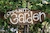

Growing together
Join our community of garden enthusiasts to learn, share, and cultivate our neighborhoods through sustainable gardening practices.
Upcoming Events Gardening ResourcesDiscover eco-friendly techniques that benefit both your garden and the environment with guidance from experienced gardeners.
Meet like-minded individuals who share your passion for gardening and community building.
Grow and share organic vegetables, fruits, and herbs right in your neighborhood.